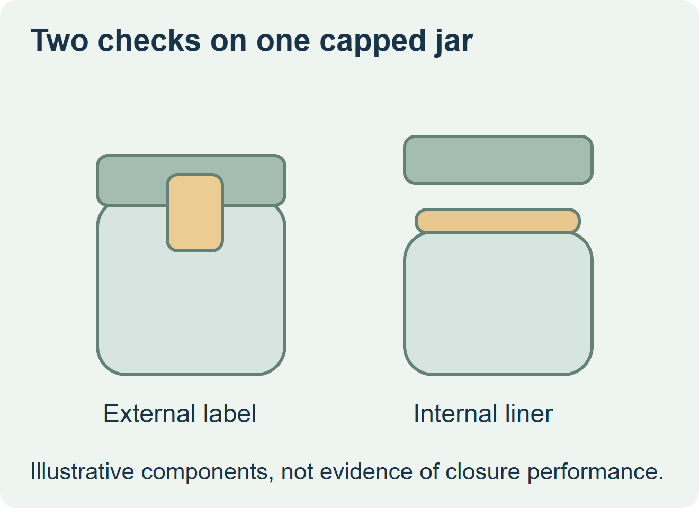
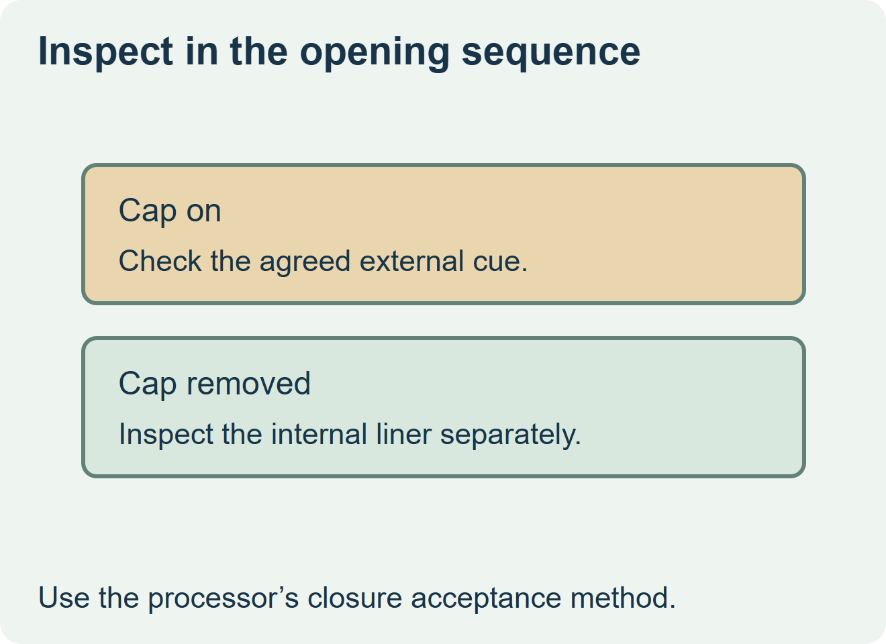

Use an external label when the buyer needs an agreed opening cue before anyone removes the cap. If the intended check happens after cap removal, ask the closure owner to confirm the internal liner’s role first. Assess both parts separately if the package uses both.


Identify the moment the cue must be visible
Induction sealing equipment maker Enercon describes an internal foil liner that is heated through a capped container. The consumer generally sees that liner after taking off the cap. An external cap-to-body label is visible earlier and crosses a different interface. Ask the food pack owner which opening cue each component should provide, and have the responsible processor approve the closure and liner independently. Enercon’s induction sealing overview
| Required check | Component to evaluate | Proof on the assembled jar |
|---|---|---|
| Look for a visible cue with the cap on | Approved external label or another visible closure feature | Check that the cue is visible as sold and changes as intended during normal opening. |
| Inspect the internal seal once the cap is off | Liner and closure system approved by the processor | Check the actual closure using the processor’s approved method. |
| Use both checks | External label and internal liner with separate acceptance criteria | Confirm that neither part obscures the other’s intended check. |


Approve the external label on the finished closure
Mark the moving cap edge, approved fixed landing area and any feature shoppers need to see. Apply the representative label at the intended point and confirm that it stays readable through normal packing and handling. Open the jar as intended and observe whether the external cue behaves as specified. Check the liner using the separate procedure agreed with the processor.
If the cap has too little landing area, discuss an alternative external format with the closure owner before changing the artwork. For a hypothetical condiment jar, a cap-bridging label can give a front-facing cue while the liner retains its internal function. The visible label provides evidence about its own condition only.
Discuss the unresolved label requirement
Send the jar and closure samples, the intended visible cue, the permitted cap and body landing zones, the label application and use conditions, and quantities. Review food label options and prepare a label specification inquiry. The contact page opens an email draft and lists email or WhatsApp for attachments. Supply, proof options, testing, pricing and timing require project confirmation.